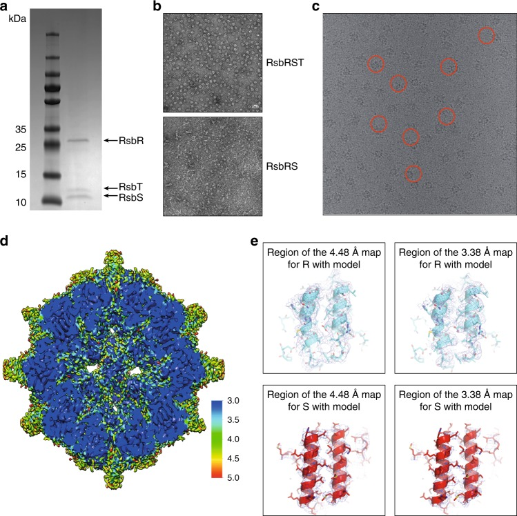

stressosome
A bacterial multiprotein regulatory assembly with an oligomeric core formed by RsbR-family and RsbS STAS domains and an associated RsbT kinase. Characterized stressosomes organize environmental-stress signaling; their subunit composition and requirement for downstream responses depend on the organism and experimental context. [DOI:10.1038/s41467-019-10782-0]

NCBITaxon:169963) · Allison H. Williams, Adam Redzej, Nathalie Rolhion, Tiago R. D. Costa, Aline Rifflet, Gabriel Waksman, Pascale Cossart; CC BY, via PubMed Central · CC_BY_4_0 · source: PMC PMC6614362.1 Fig1 · DOI:10.1038/s41467-019-10782-0Components
| Component | Type | Part of / acts on | Grounding | Genes | Stoichiometry | Essential | Role |
|---|---|---|---|---|---|---|---|
| RsbR-family stressosome proteins | Protein | part of | Reviewed label only (reviewed name; no accession asserted) | rsbR, rsbRA, ytvA | UNKNOWN | Oligomeric core subunits with C-terminal STAS domains and outward-facing N-terminal sensory domains. The RsbR paralog repertoire and sensory-domain type vary between organisms.
| |
| RsbS | Protein | part of | Reviewed label only (reviewed name; no accession asserted) | rsbS | UNKNOWN | STAS-domain core subunit interspersed with RsbR-family subunits.
| |
| RsbT | Protein | part of | Reviewed label only (reviewed name; no accession asserted) | rsbT | UNKNOWN | Associated signaling kinase in RsbR-RsbS-RsbT particles. Its necessity for downstream signaling is distinct from its necessity for formation of an RsbR-RsbS core.
| |
| Stressosome-associated protein Prli42 | Protein | acts on | InterPro:IPR049722 | prli42 | DISPENSABLE | Listeria membrane-associated miniprotein implicated in RsbR-dependent stressosome tethering, not a generic core subunit. Dispensability refers to reconstituted RsbR-RsbS-RsbT assembly without Prli42, not normal localization or stress signaling in vivo.
|
Organism-specific protein examples
Named proteins in which each component's role was established, with the organism the evidence comes from. The component above is the taxon-agnostic family; these are the specific entries behind it.
RsbR-family stressosome proteins
| Accession | Protein | Gene | Organism | Entry |
|---|---|---|---|---|
UniProtKB:P42409 | RsbT co-antagonist protein RsbRA | rsbRA | Bacillus subtilis subsp. subtilis str. 168 (NCBITaxon:224308) | REVIEWED |
Role and evidence (1 reference)RsbRA constituent of the reconstituted strain-168 core.
| ||||
RsbS
| Accession | Protein | Gene | Organism | Entry |
|---|---|---|---|---|
UniProtKB:P42410 | RsbT antagonist protein RsbS | rsbS | Bacillus subtilis subsp. subtilis str. 168 (NCBITaxon:224308) | REVIEWED |
Role and evidence (1 reference)RsbS constituent of the reconstituted strain-168 core.
| ||||
Canonical examples
NCBITaxon:224308Bacillus subtilis subsp. subtilis str. 168 — Source of cloned RsbRA and RsbS used for core reconstitution and cryo-EM. Recombinant expression in E. coli is not evidence for a native E. coli stressosome. [DOI:10.1107/S205225251900945X]NCBITaxon:169963Listeria monocytogenes EGD-e — Native Prli42 association and RsbR fractionation were tested in EGD-e. RCSB entry 6QCM independently identifies EGD-e as the source of the RsbR structural construct, distinct from its E. coli expression host. [DOI:10.1038/nmicrobiol.2017.5]NCBITaxon:1415167Bacillus subtilis PY79 — Parental background of the 2025 genetic experiments, including rsbP-deleted derivatives that retain ethanol-induced sigma-B reporter activity without the RsbR/RsbS core. [DOI:10.1038/s41467-025-56871-1]
Functions
- environmental stress response regulation — The stressosome organizes stress-signaling proteins. In tested Bacillus subtilis PY79 derivatives, an intact RsbR/RsbS core promotes rapid onset and shutoff of the ethanol-induced sigma-B response; core loss does not abolish all environmental stress signaling.
DOI:10.1038/s41467-019-10782-0Structural and biochemical characterization establishes the RsbR-RsbS-RsbT regulatory assembly.DOI:10.1038/s41467-025-56871-1Core-deficient, rsbP-deleted PY79 derivatives retain a delayed, longer-lived ethanol response that remains RsbT dependent. Salt responses were also observed; the weak acid-stress response was inconclusive.
Mechanism graphs
Bacillus core-independent stress response (FUNCTION)
Experimental dependencies of sigma-B reporter output, not a molecular model of stress recognition or kinase release.
| Subject | Predicate | Object | Evidence |
|---|---|---|---|
| ethanol stress | induces | ethanol-induced sigma-B reporter response |
|
| RsbT | is_required_for | ethanol-induced sigma-B reporter response |
|
| experimental RsbR/RsbS core loss | produces | delayed and longer-lived sigma-B response |
|
Discussions
- CURATION_TODO (OPEN): Resolve exact RsbR, RsbS and RsbT family groundings. The checked UniProt-to-InterPro mappings are broader than each component or describe domains. Label-only components preserve identity without substituting a shared STAS domain for a family.
- INTERPRETATION (RESOLVED): Does loss of stress signaling establish failure of stressosome assembly? No. Formation essentiality is left unknown for the generic core constituents. Bacillus RsbRA/RsbS cores assemble without RsbT; Listeria preparation-dependent assembly results do not justify a universal RsbT requirement. The 2025 RsbT signaling requirement does not establish a structural formation requirement.
- INTERPRETATION (RESOLVED): Is the stressosome indispensable for environmental stress sensing? Not in every tested context. The 2025 PY79 experiments retain ethanol and salt responses after core loss. A clean rsbRA-rsbS deletion also depresses RsbT production, so its failure to signal cannot by itself establish core necessity. Translation-stop constructs address this confound. The study does not rule out sensory functions for individual RsbR paralogs.
- INTERPRETATION (RESOLVED): Is Prli42 a universal core constituent or a demonstrated channel? Neither claim is made. Native co-isolation of RsbR and RsbS, fractionation and perturbation justify Listeria-associated membrane machinery. The direct-versus-indirect tether mechanism and localization of every intact assembled particle are not resolved by RsbR fractionation. Prli42 is absent from the reconstituted core and its proposed channel role is speculative.
- INTERPRETATION (RESOLVED): Should RsbU, RsbV, RsbW, sigma-B or RsbX be generic core constituents? The curated structural core is RsbR/RsbS with associated RsbT. Downstream signaling proteins are not made constituents merely because their activity depends on the pathway. RsbX-mediated resetting is also not evidence of a stable structural constituent; no RsbX occupancy or exact binding-state claim is imported here.
- INTERPRETATION (RESOLVED): Should a single 60-subunit composition or an RsbS-only crystal shell define all stressosomes? No. Listeria reconstruction supports a 40-RsbR/20-RsbS core, whereas Bacillus reconstructions vary with the reconstruction and symmetry treatment. Exact generic copy numbers are omitted. The RsbS-only icosahedron is crystal packing; solution measurements support a dimer, not a native RsbS-only stressosome.
- CURATION_TODO (OPEN): Resolve the molecular trigger and dynamic signaling mechanism. Static loop accessibility, approximate turret placement and kinetic phenotypes do not directly measure gating, RsbT release or recapture, or direct stress recognition. Exact interface residue claims also require reconciliation of inconsistent numbering in the 2019 Listeria Results and Methods. The graph therefore records experimental dependencies only.
Evidence
DOI:10.1038/s41467-019-10782-0Williams et al. 2019, Nature Communications 10:3005; PMID 31285450, PMC6614362. Purified Listeria stressosome cryo-EM, biochemistry and cellular perturbations.DOI:10.1107/S205225251900945XKwon et al. 2019, Structural insights into stressosome assembly, IUCrJ 6:938-947; PMID 31576226, PMC6760441. Bacillus core reconstitution, cryo-EM, crystallography and association assays.DOI:10.1038/nmicrobiol.2017.5Impens et al. 2017, Nature Microbiology 2:17005; PMID 28191904, PMC5802382. Native Prli42 association, RsbR fractionation and purified-complex assembly.DOI:10.1038/s41467-025-56871-1Khadka et al. 2025, Stressosome-independent but RsbT-dependent environmental stress sensing in Bacillus subtilis, Nature Communications 16:1591; PMID 39939311, PMC11821858.GO:0032991Verified active cellular-component term protein-containing complex, used only as a broader parent. QuickGO stressosome search returned no matching term on 2026-10-03.
Curation history
2026-10-03T15:19:45Zcodex · CREATED_RECORD — Scaffolded by scripts/new_record.py2026-10-03T15:21:38Zcodex · CURATED_RECORD — Added four evidence-backed components, two verified UniProt examples, three strain examples, scoped response dependencies, boundary discussions and a visually inspected, licence-checked PMC figure.